คู่มือการใช้งาน SmartAsset Analytics
ระบบบริหารคลังอุปกรณ์ (เครื่องสแกนหน้า/ลายนิ้วมือ ฯลฯ) ตั้งแต่รับเข้าคลัง โอนให้กลุ่มลูกค้า เบิกออก ติดตั้งที่หน้างาน ส่งซ่อม จนถึงปลดระวาง พร้อมประวัติทุกการเคลื่อนไหว
ภาพประกอบทั้งหมดถ่ายจากระบบจริงที่ความละเอียด 1440×900 (มือถือ 390×844) ธีมสว่าง ด้วยบัญชี "ผู้ดูแลแพลตฟอร์ม" และข้อมูลตัวอย่าง (ดูหัวข้อ 14) เมนูและปุ่มที่เห็นอาจน้อยกว่านี้ตามบทบาทของผู้ใช้ ถ่ายภาพชุดนี้ใหม่ได้ทั้งหมดด้วย
node scripts/guide-screenshots.cjs(วิธีใช้อยู่ที่หัวไฟล์)คู่มือฉบับ HTML อยู่ที่
docs/user-guide/index.html(เปิดในเบราว์เซอร์ได้ทันที มีสารบัญด้านข้าง ค้นหาหัวข้อ คลิกภาพเพื่อขยาย และสั่งพิมพ์เป็น PDF ได้) หลังแก้ไฟล์นี้ให้สร้างใหม่ด้วยnode scripts/guide-html.cjs
1. บทบาทผู้ใช้และสถานะอุปกรณ์
| บทบาท | ทำอะไรได้ |
|---|---|
| ผู้ดูแลแพลตฟอร์ม | เห็นทุกกลุ่มลูกค้า โอนอุปกรณ์จากคลังกลาง จัดการกลุ่มลูกค้า รุ่นอุปกรณ์ และผู้ใช้ทั้งหมด |
| ผู้ดูแลกลุ่มลูกค้า | ทำรายการกับอุปกรณ์ในกลุ่มของตน และจัดการผู้ใช้ในกลุ่ม |
| เจ้าหน้าที่ | ทำรายการกับอุปกรณ์ในกลุ่มของตน (เบิก ติดตั้ง ส่งซ่อม ฯลฯ) |
| ผู้ดูข้อมูล | ดูข้อมูลได้อย่างเดียว |
อุปกรณ์แต่ละเครื่องมี 7 สถานะ และระบบจะแสดงเฉพาะปุ่มที่ทำได้ในสถานะปัจจุบัน เครื่องที่รับคืนทุกกรณีจะเข้าคิว "รอตรวจสอบ (QC)" ก่อนกลับเข้าคลัง
stateDiagram-v2 [*] --> อยู่ในคลัง: รับเข้า / นำเข้า อยู่ในคลัง --> อยู่ในคลัง: โอน (เฉพาะผู้ดูแลแพลตฟอร์ม) อยู่ในคลัง --> เบิกออก: เบิกออก (ต้องอยู่ในกลุ่มลูกค้าแล้ว) อยู่ในคลัง --> ยืม: ให้ยืม (ต้องอยู่ในกลุ่มลูกค้าแล้ว) เบิกออก --> ติดตั้งแล้ว: ติดตั้ง เบิกออก --> รอตรวจสอบ: รับคืน ติดตั้งแล้ว --> รอตรวจสอบ: รับคืน ยืม --> รอตรวจสอบ: รับคืน รอตรวจสอบ --> อยู่ในคลัง: QC ผ่าน รอตรวจสอบ --> ส่งซ่อม: QC ไม่ผ่าน อยู่ในคลัง --> ส่งซ่อม เบิกออก --> ส่งซ่อม ติดตั้งแล้ว --> ส่งซ่อม ส่งซ่อม --> อยู่ในคลัง: ซ่อมเสร็จ / QC อยู่ในคลัง --> ปลดระวาง รอตรวจสอบ --> ปลดระวาง ส่งซ่อม --> ปลดระวาง
การแก้ไขข้อมูลเครื่อง (เช่น MAC ต้นทุน วันหมดประกัน) จะถูกบันทึกในประวัติเป็นรายการ "แก้ไขข้อมูล" พร้อมฟิลด์ที่เปลี่ยน โดยสถานะไม่เปลี่ยน
2. เข้าสู่ระบบและหน้าจอหลัก
2.1 เข้าสู่ระบบ
กรอกอีเมลและรหัสผ่าน แล้วกด เข้าสู่ระบบ
- กดไอคอน 👁 ท้ายช่องรหัสผ่านเพื่อแสดง/ซ่อนรหัสที่พิมพ์
- ติ๊ก จดจำอีเมลบนเครื่องนี้ เพื่อให้กรอกอีเมลไว้ให้ในครั้งถัดไป (ไม่จำรหัสผ่าน)
- ปุ่ม ◐ มุมขวาบนสลับธีมสว่าง/มืดได้ตั้งแต่หน้านี้
- ถ้าเปิดลิงก์ของระบบ (เช่น สแกน QR บนฉลากอุปกรณ์) ขณะยังไม่ได้เข้าสู่ระบบ หน้านี้จะขึ้นว่า "เข้าสู่ระบบเพื่อไปยังหน้าที่คุณเปิดไว้" และพากลับไปหน้านั้นหลังเข้าสู่ระบบ
บนจอกว้าง ด้านซ้ายแสดงภาพตัวอย่างแดชบอร์ดและจุดเด่นของระบบ (ตัวเลขในภาพเป็นตัวอย่าง ไม่ใช่ข้อมูลจริง) บนมือถือจะเห็นเฉพาะฟอร์ม

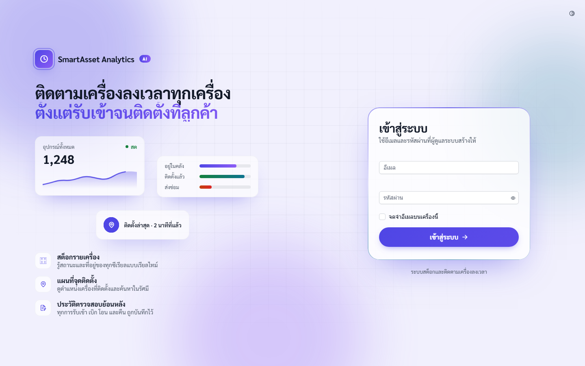
ถ้ารหัสผ่านผิดหรือบัญชีถูกระงับ ระบบจะแจ้งเตือนด้านบนฟอร์ม

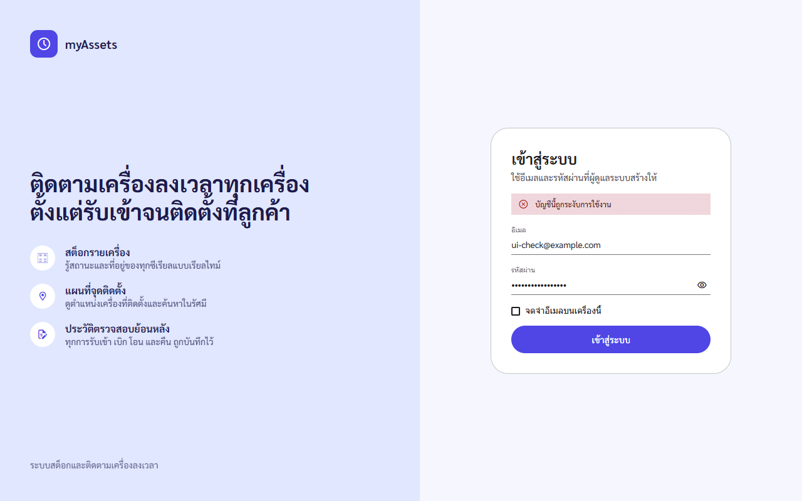
2.2 แดชบอร์ด
หน้าแรกหลังเข้าสู่ระบบ แสดง
- การ์ดจำนวนอุปกรณ์ทั้งหมดและตามสถานะ พร้อมตัวเลขเปลี่ยนแปลงใน 7 วัน คลิกการ์ดเพื่อไปหน้าอุปกรณ์ที่กรองสถานะนั้นไว้แล้ว
- แผง งานค้าง: จำนวนเครื่องที่รอตรวจสอบ (QC), ยืมเกินกำหนดคืน และส่งซ่อมเกิน 14 วัน คลิกแต่ละรายการเพื่อดูเครื่องที่เกี่ยวข้อง (ถ้าไม่มีงานค้างจะขึ้น "ไม่มีงานค้าง")
- กราฟความเคลื่อนไหว 30 วัน สัดส่วนตามสถานะ และจำนวนตามรุ่น
- กิจกรรมล่าสุด คลิกซีเรียลเพื่อเปิดรายละเอียดเครื่อง (กด ดูทั้งหมด เพื่อไปหน้าความเคลื่อนไหวสต็อก)
- ปุ่มลัด รับเข้า, นำเข้า, สแกน และปุ่มรีเฟรช

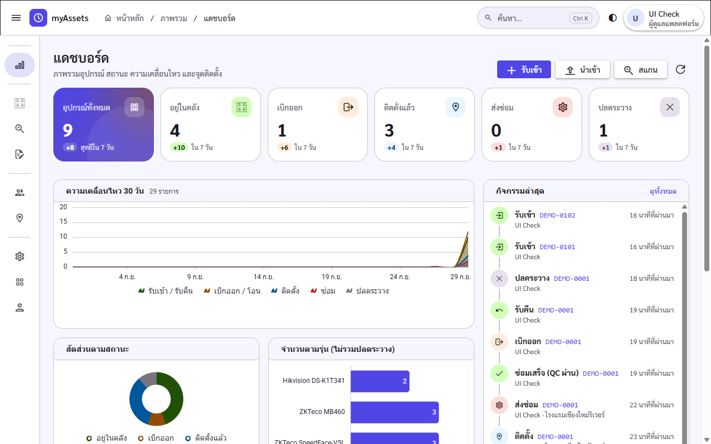
2.3 เมนูและการค้นหา
- ปุ่ม ☰ มุมซ้ายบนสลับเมนูแบบย่อ (ไอคอน) และแบบเต็ม ระบบจำค่าที่เลือกไว้

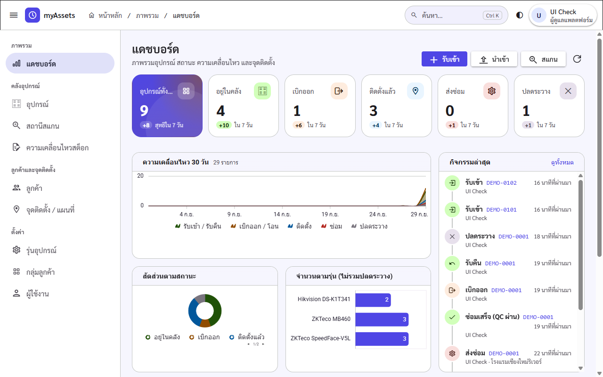
- ช่อง ค้นหา... ด้านบน (หรือกด
Ctrl K) ใช้กระโดดไปหน้าต่าง ๆ หรือค้นหาอุปกรณ์ด้วยซีเรียลได้ทันที

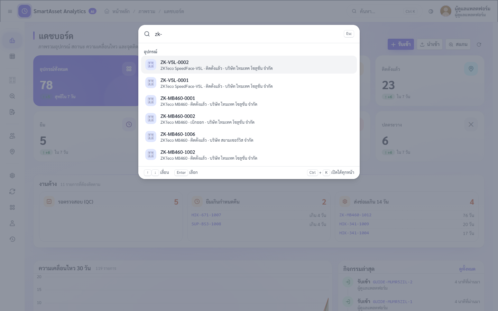
3. รับอุปกรณ์เข้าคลัง
เมนู คลังอุปกรณ์ → อุปกรณ์ แสดงรายการทุกเครื่อง ใช้ชิปด้านบน (ทั้งหมด / อยู่ในคลัง / เบิกออก / …) ซึ่งบอกจำนวนเครื่องในแต่ละสถานะ เพื่อกรอง และใช้แถบเครื่องมือของตารางเพื่อส่งออก Excel/PDF เลือกคอลัมน์ หรือค้นหา (ค้นจากซีเรียล ยี่ห้อ รุ่น หรือ MAC)
ตารางโหลดข้อมูลทีละหน้าจากเซิร์ฟเวอร์ จึงเปิดได้เร็วแม้มีอุปกรณ์หลายหมื่นเครื่อง คลิกหัวคอลัมน์เพื่อเรียงลำดับ และเลือกจำนวนรายการต่อหน้าได้ที่มุมล่างซ้าย ส่วนปุ่ม Excel/PDF จะส่งออกทุกเครื่องตามตัวกรองปัจจุบัน ไม่ใช่เฉพาะหน้าที่เห็น
คอลัมน์ จัดการ ท้ายตารางมีปุ่มไอคอน 👁 ดูรายละเอียด และ ✎ แก้ไข ของแถวนั้นโดยไม่ต้องเลือกแถวก่อน ตารางอื่น ๆ (ลูกค้า จุดติดตั้ง รุ่นอุปกรณ์ ผู้จำหน่าย กลุ่มลูกค้า ผู้ใช้งาน) มีปุ่มชุดเดียวกัน ปุ่ม "ดู" เปิดหน้าต่างสรุปข้อมูลแบบอ่านอย่างเดียว ซึ่งกด แก้ไข ต่อได้ถ้ามีสิทธิ์ ปุ่มแก้ไขจะไม่แสดงสำหรับผู้ใช้ที่ไม่มีสิทธิ์แก้ไขข้อมูลนั้น

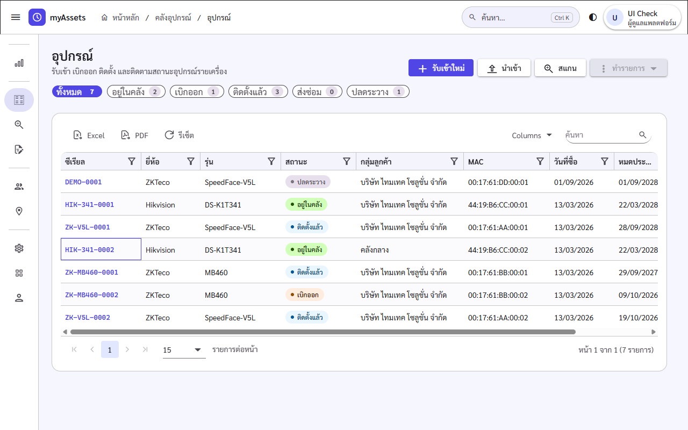

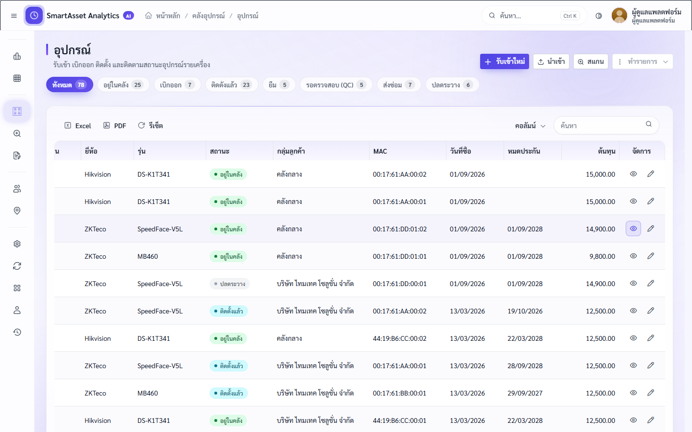
กด รับเข้าใหม่ แล้วกรอก
- หมายเลขซีเรียล และ รุ่นอุปกรณ์ (จำเป็น)
- กลุ่มลูกค้า — เว้นว่างไว้ถ้ารับเข้าคลังกลาง
- MAC Address, ต้นทุน, วันที่ซื้อ, วันสิ้นสุดประกัน, หมายเหตุ (ไม่บังคับ)
- รหัสทรัพย์สิน (ห้ามซ้ำภายในกลุ่มลูกค้าเดียวกัน), เฟิร์มแวร์ และ ซื้อจากผู้จำหน่าย (ไม่บังคับ; ไฟล์นำเข้ามีคอลัมน์รหัสทรัพย์สินด้วย)

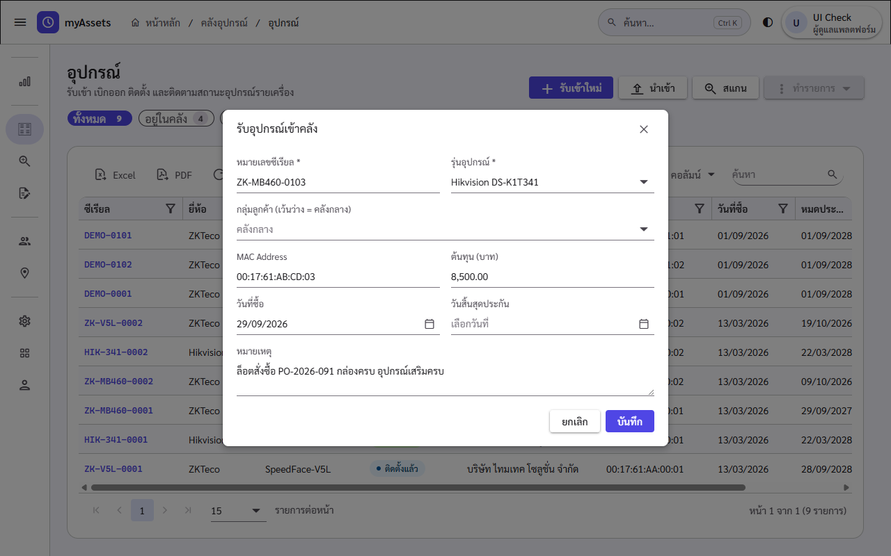
กด บันทึก เครื่องจะอยู่ในสถานะ "อยู่ในคลัง" และมีประวัติ "รับเข้า"
4. วงจรชีวิตอุปกรณ์: โอน → เบิก → ติดตั้ง / ยืม
คลิกซีเรียลในตารางเพื่อเปิดแผงรายละเอียดด้านขวา แผงนี้แสดงข้อมูลเครื่อง สถานะประกัน ปุ่มทำรายการตามสถานะ และประวัติความเคลื่อนไหว ปุ่มที่หัวแผงคือ ✎ แก้ไขข้อมูล, 🖨 พิมพ์ฉลาก (หัวข้อ 4.6), ⧉ คัดลอกลิงก์ของเครื่อง และ ✕ ปิด

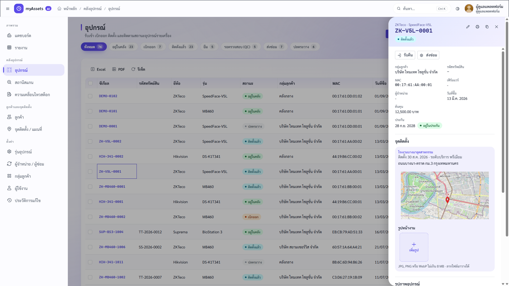
รูปภาพอุปกรณ์: ส่วน "รูปภาพอุปกรณ์" ในแผงรายละเอียดเก็บรูปของเครื่องได้หลายรูป (สูงสุด 20 รูป) กดช่อง เพิ่มรูป หรือลากไฟล์มาวาง (JPG, PNG, WebP ไม่เกิน 8 MB ต่อรูป) ระบบย่อขนาดและทำภาพตัวอย่างให้อัตโนมัติ คลิกรูปเพื่อดูขนาดใหญ่ เลื่อนดูรูปก่อนหน้า/ถัดไป เปิดขนาดเต็ม หรือ ลบรูปนี้ (ผู้ใช้บทบาทดูอย่างเดียวดูรูปได้แต่เพิ่ม/ลบไม่ได้)
4.1 โอนให้กลุ่มลูกค้า (ผู้ดูแลแพลตฟอร์ม)
กด โอน เลือก ปลายทาง (รายการจะไม่แสดงตำแหน่งที่เครื่องอยู่ตอนนี้) และใส่หมายเหตุ แล้วกด ยืนยัน

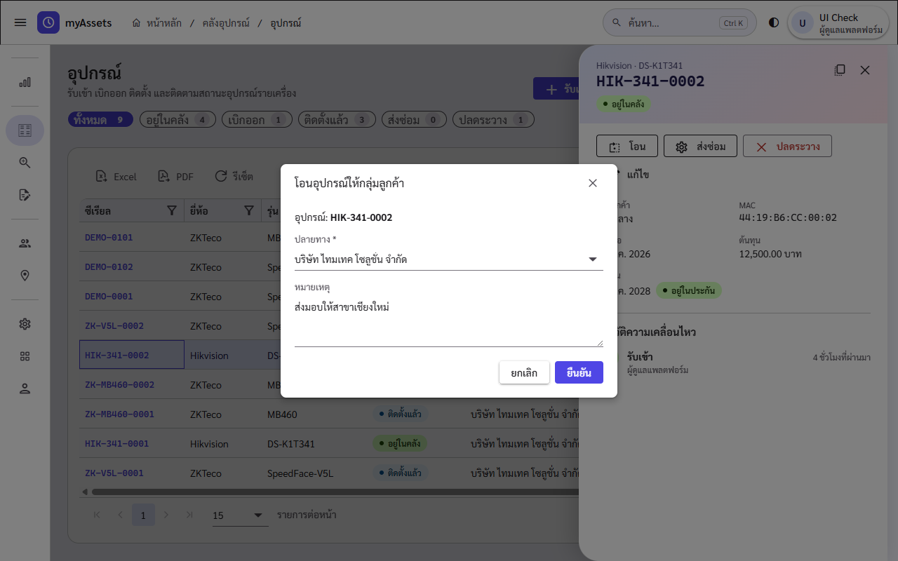
4.2 เบิกออก
เมื่อเครื่องอยู่ในคลังของกลุ่มลูกค้าแล้ว กด เบิกออก ใส่หมายเหตุ (เช่น เบิกให้ช่างคนไหน) แล้วกด ยืนยัน

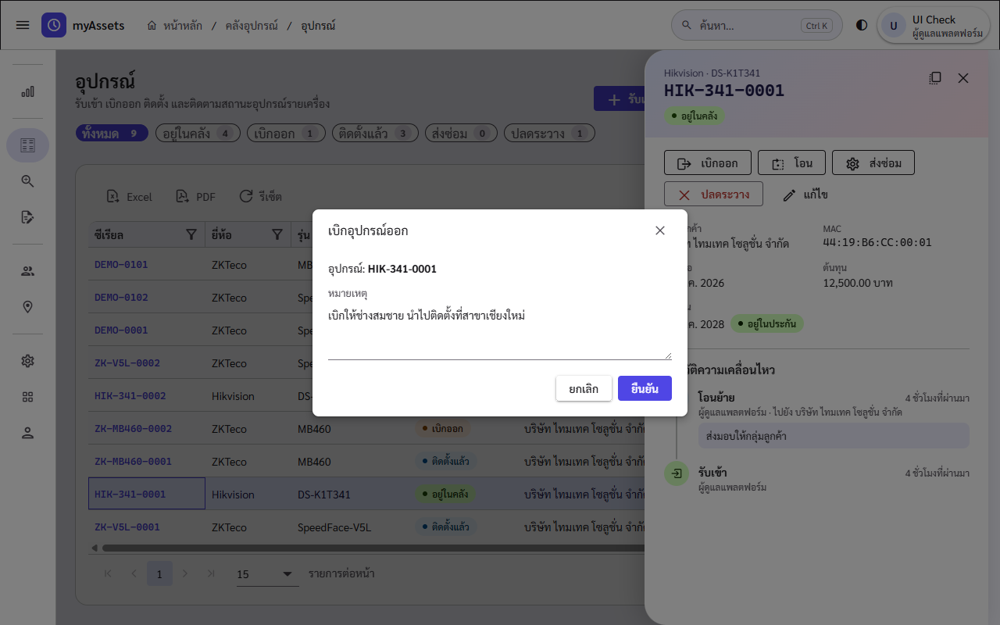
4.3 บันทึกการติดตั้ง
กด ติดตั้ง แล้วเลือก ลูกค้า วันที่ติดตั้ง และตำแหน่ง โดยคลิกบนแผนที่เพื่อปักหมุด (ซูมและลากแผนที่ได้ก่อนคลิก) ระบบจะกรอกละติจูด/ลองจิจูดให้ หรือกด ใช้ตำแหน่งปัจจุบัน เมื่ออยู่หน้างานเพื่อดึงพิกัดจาก GPS แล้วใส่ที่อยู่จุดติดตั้ง ผู้ติดต่อและโทรศัพท์หน้างาน และหมายเหตุการติดตั้ง (ไม่บังคับ) แนบ รูปหน้างาน ได้สูงสุด 10 รูปในไดอะล็อกเดียวกัน (ถ่ายจากมือถือได้ทันที) และเพิ่ม/ลบภายหลังได้ในส่วน "รูปหน้างาน" ของแผงรายละเอียดหรือหน้าจุดติดตั้ง

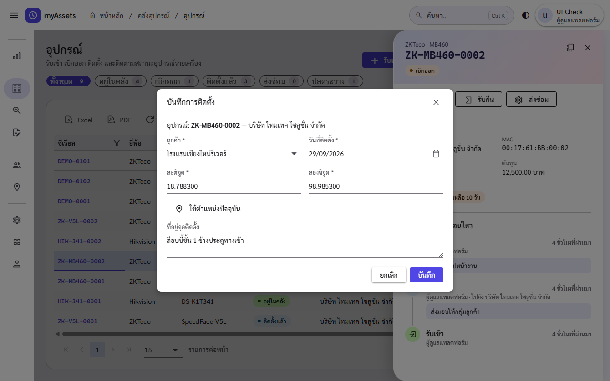
หลังบันทึก สถานะเป็น "ติดตั้งแล้ว" และแผงรายละเอียดแสดงลูกค้า จุดติดตั้ง และแผนที่

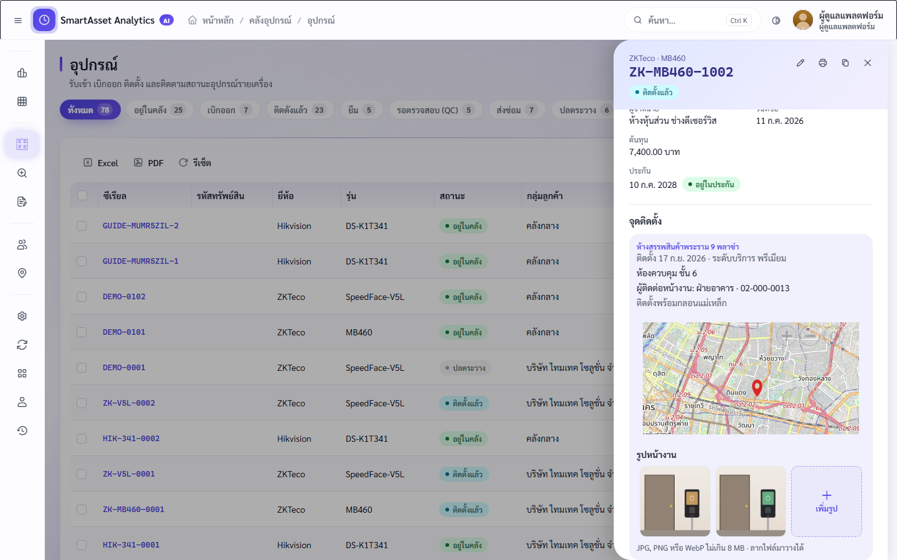
เลื่อนลงเพื่อดูประวัติทั้งหมดเรียงจากล่าสุด พร้อมผู้ทำรายการ หมายเหตุ และภาพตัวอย่างของรูปประกอบรายการ (คลิกเพื่อเปิดขนาดเต็ม)

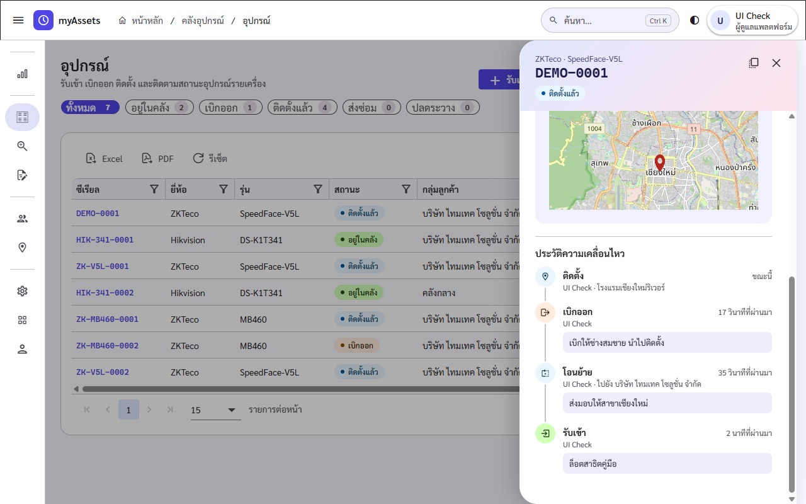
4.4 ให้ยืม
ใช้กับเครื่องที่อยู่ในคลังของกลุ่มลูกค้า เช่น ให้ลูกค้าทดลองใช้ กด ให้ยืม เลือก วันครบกำหนดคืน (จำเป็น) และระบุผู้ยืมหรือวัตถุประสงค์ แล้วกด ยืนยัน

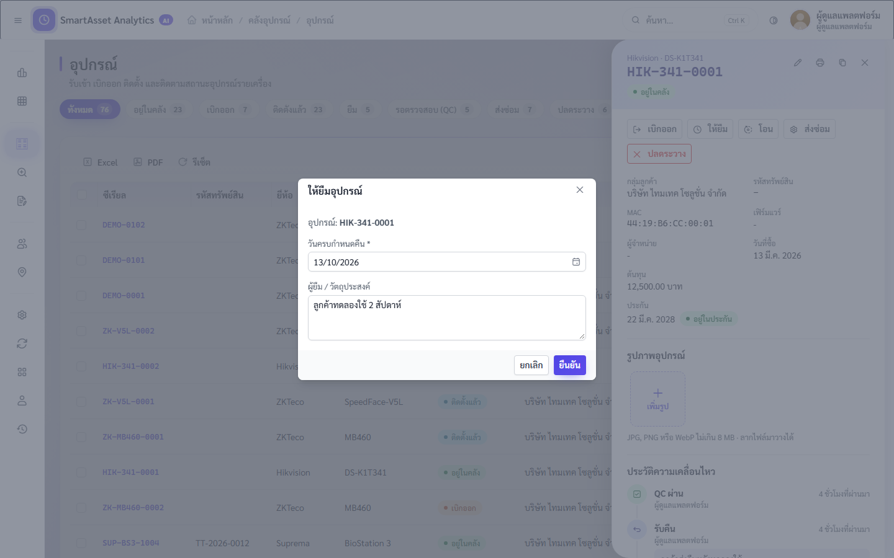
แผงรายละเอียดจะแสดงวันครบกำหนดคืนพร้อมจำนวนวันที่เหลือ (ชิปเปลี่ยนเป็นสีเหลืองเมื่อเหลือไม่เกิน 3 วัน และขึ้น "เกินกำหนด N วัน" เมื่อเลยกำหนด) และเครื่องที่ยืมเกินกำหนดจะขึ้นในแผงงานค้างบนแดชบอร์ด เมื่อได้เครื่องคืนให้กด รับคืน (ดูหัวข้อ 6)
4.5 ทำรายการหลายเครื่องพร้อมกัน
ติ๊กช่องหน้าแถวในตารางอุปกรณ์ (หรือช่องบนหัวตารางเพื่อเลือกทั้งหน้า) เมื่อเลือกตั้งแต่ 2 เครื่องขึ้นไป แถบคำสั่งจะลอยขึ้นที่ด้านล่างของจอ แสดงจำนวนที่เลือกและเฉพาะรายการที่ ทุกเครื่อง ทำได้ในสถานะปัจจุบัน เช่น เลือกเครื่องในคลังกลางหลายเครื่องจะเห็น โอน, ส่งซ่อม, ปลดระวาง ส่วนปุ่ม พิมพ์ฉลาก มีเสมอ และ ล้าง ยกเลิกการเลือก (ช่องติ๊กแสดงเฉพาะผู้ที่มีสิทธิ์ทำรายการ)

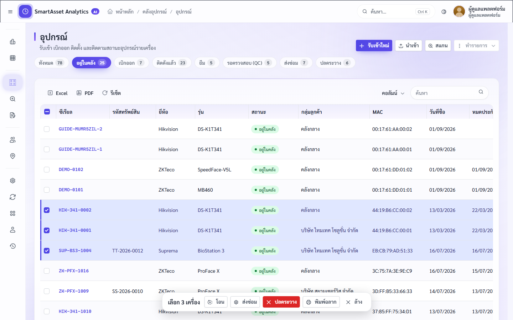
กดรายการที่ต้องการ ไดอะล็อกจะแสดงซีเรียลทุกเครื่องที่เลือก และช่องที่รายการนั้นต้องใช้ (ปลายทางสำหรับโอน ผู้ซ่อมสำหรับส่งซ่อม วันครบกำหนดสำหรับให้ยืม) หมายเหตุที่กรอกจะใช้กับทุกเครื่อง แล้วกด ยืนยัน N เครื่อง

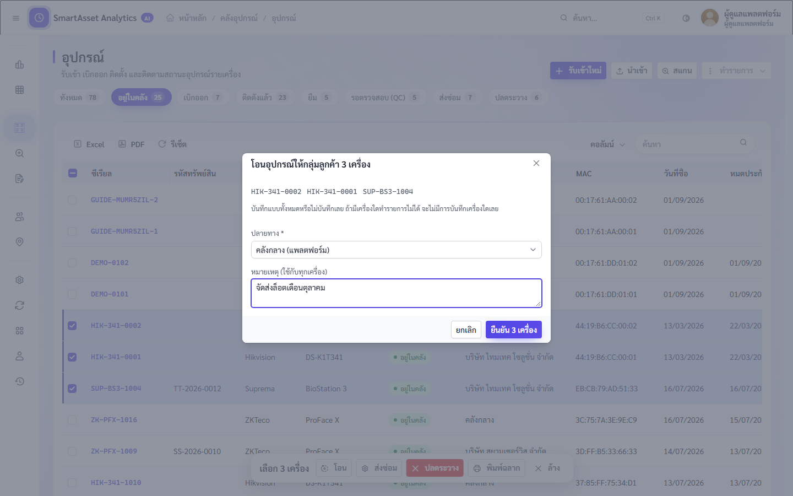
- ทำได้ครั้งละไม่เกิน 200 เครื่อง รายการที่รองรับคือ โอน เบิกออก ให้ยืม รับคืน QC ผ่าน ส่งซ่อม และปลดระวาง (การติดตั้งต้องทำทีละเครื่องเพราะแต่ละจุดมีพิกัดของตัวเอง)
- บันทึกแบบ ทั้งหมดหรือไม่บันทึกเลย: ถ้ามีเครื่องใดทำรายการไม่ได้ (เช่น มีคนเปลี่ยนสถานะไปก่อน) จะไม่มีเครื่องใดถูกบันทึก และไดอะล็อกจะแสดงซีเรียลพร้อมเหตุผลของแต่ละเครื่องให้แก้ไขแล้วลองใหม่
- แต่ละเครื่องยังได้ประวัติของตัวเองหนึ่งรายการเหมือนทำทีละเครื่อง
4.6 พิมพ์ฉลาก QR/บาร์โค้ด
กดไอคอน 🖨 ที่หัวแผงรายละเอียด (เครื่องเดียว) หรือปุ่ม พิมพ์ฉลาก ในแถบคำสั่งหลายเครื่องและในโหมดสแกนต่อเนื่อง (หัวข้อ 8) ฉลากแต่ละดวงมี
- QR code เป็นลิงก์ไปหน้าสถานีสแกนของเครื่องนั้น สแกนด้วยกล้องมือถือแล้วเปิดข้อมูลและปุ่มทำรายการได้ทันที (ถ้ายังไม่ได้เข้าสู่ระบบ จะเข้าสู่ระบบก่อนแล้วกลับมาหน้าเครื่องเอง)
- บาร์โค้ด Code128 ของซีเรียล สำหรับเครื่องยิงบาร์โค้ด
- ซีเรียล ยี่ห้อ/รุ่น และรหัสทรัพย์สิน (ถ้ามี)
เลือกรูปแบบ แผ่น A4 (3 × 8 ดวง, 70 × 37 มม.) สำหรับกระดาษสติกเกอร์แบบแผ่น หรือ ฉลากม้วน (ดวงละ 50 × 30 มม.) สำหรับเครื่องพิมพ์ฉลาก ไดอะล็อกแสดงตัวอย่างสูงสุด 6 ดวงและจำนวนแผ่นที่ต้องใช้ แล้วกด พิมพ์ ในหน้าต่างพิมพ์ของเบราว์เซอร์ให้ตั้งสเกล 100% (ขนาดจริง) และไม่มีขอบกระดาษ เพื่อให้ฉลากตรงช่องสติกเกอร์

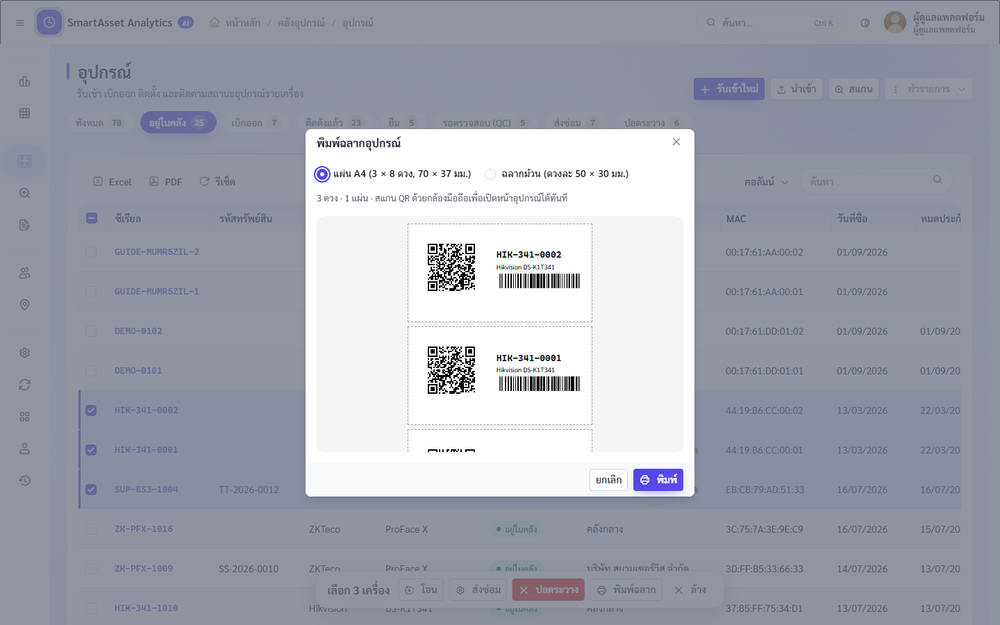
5. ส่งซ่อมและบันทึกผล QC
ไดอะล็อก ส่งซ่อม, ซ่อมเสร็จ / QC, รับคืน, QC ผ่าน และ QC ไม่ผ่าน มีช่อง รูปประกอบ แนบรูปอาการเสีย สภาพเครื่องตอนรับคืน หรือผลตรวจได้สูงสุด 10 รูป รูปจะผูกกับรายการนั้นและแสดงในประวัติความเคลื่อนไหว ถ้าอัปโหลดรูปไม่สำเร็จ รายการยังบันทึกตามปกติและระบบจะแจ้งเตือนให้ทราบ
5.1 ส่งซ่อม
กด ส่งซ่อม เลือก ผู้ซ่อม / ผู้จำหน่าย (เว้นว่างถ้าซ่อมเอง รายชื่อจัดการได้ที่หัวข้อ 11.2) แล้วระบุอาการหรือสาเหตุ

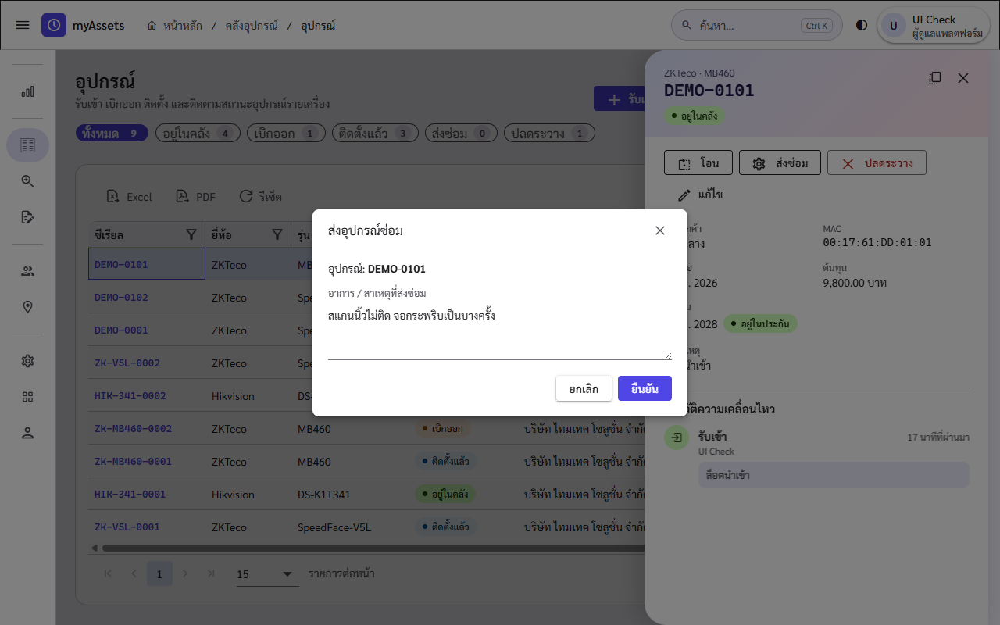
5.2 ซ่อมเสร็จ / QC
เมื่อได้เครื่องคืนจากซ่อม กด ซ่อมเสร็จ / QC และกรอก ผลการซ่อมและ QC (จำเป็น ปุ่มยืนยันจะกดได้เมื่อกรอกแล้ว)

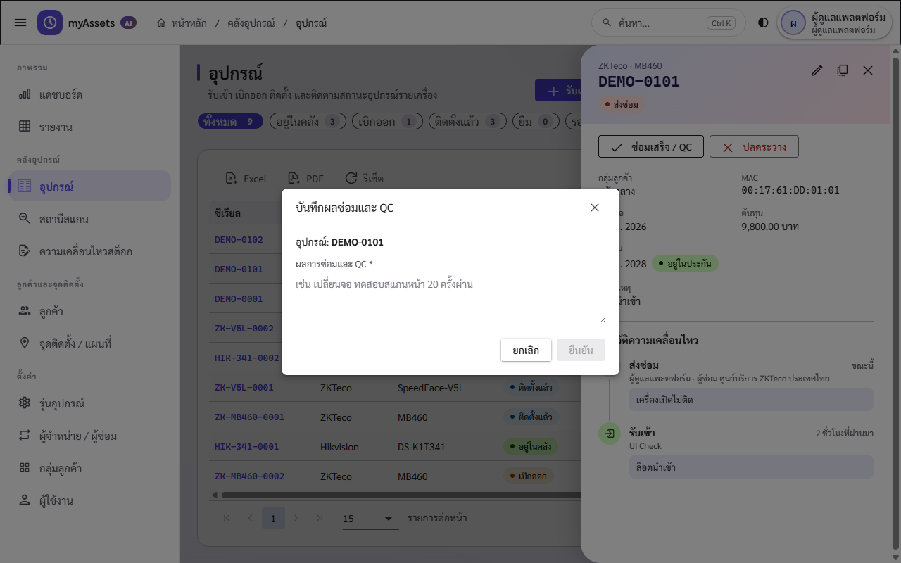

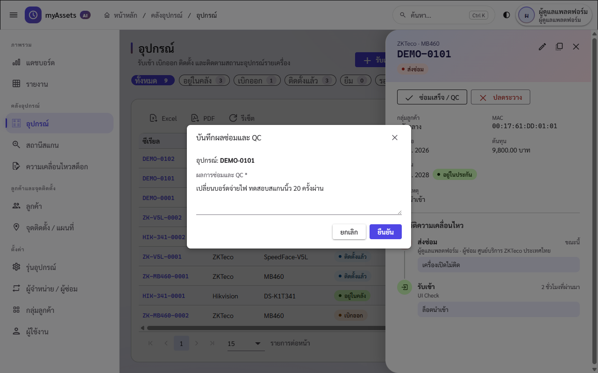
เครื่องจะกลับเป็น "อยู่ในคลัง" พร้อมเบิกใช้ใหม่ ถ้าส่งซ่อมนานเกิน 14 วันโดยยังไม่บันทึกผล เครื่องจะขึ้นในแผงงานค้างบนแดชบอร์ด
6. รับคืน ตรวจสอบ (QC) และปลดระวาง
6.1 รับคืน
ใช้กับเครื่องที่เบิกออก ติดตั้งแล้ว หรือให้ยืม กด รับคืน ใส่หมายเหตุแล้วกด ยืนยัน เครื่องจะเข้าสถานะ "รอตรวจสอบ (QC)" ยังไม่นับเป็นสต็อกพร้อมใช้จนกว่าจะบันทึกผล QC

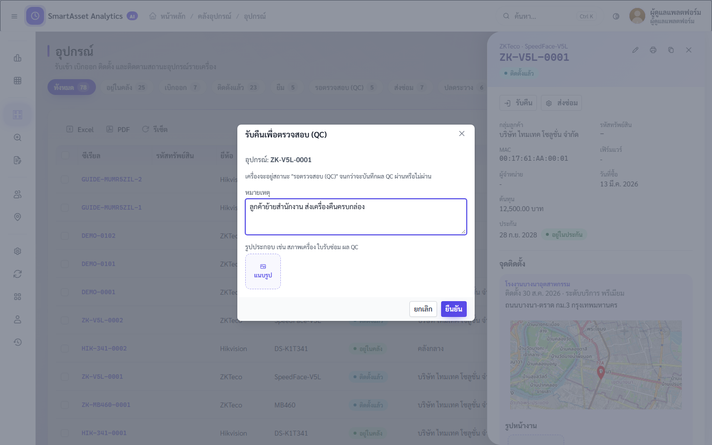
6.2 บันทึกผล QC
เครื่องที่รอตรวจสอบจะมีปุ่ม QC ผ่าน และ QC ไม่ผ่าน (ดูรายการที่รอได้จากชิป "รอตรวจสอบ (QC)" ในหน้าอุปกรณ์ หรือแผงงานค้างบนแดชบอร์ด และทำรายการจากสถานีสแกนได้เช่นกัน)
- QC ผ่าน — เครื่องกลับเป็น "อยู่ในคลัง" ใส่หมายเหตุได้ถ้าต้องการ
- QC ไม่ผ่าน — ต้องระบุอาการหรือสาเหตุ เครื่องจะเปลี่ยนเป็น "ส่งซ่อม" ทันที แล้วบันทึกผลซ่อมตามหัวข้อ 5.2

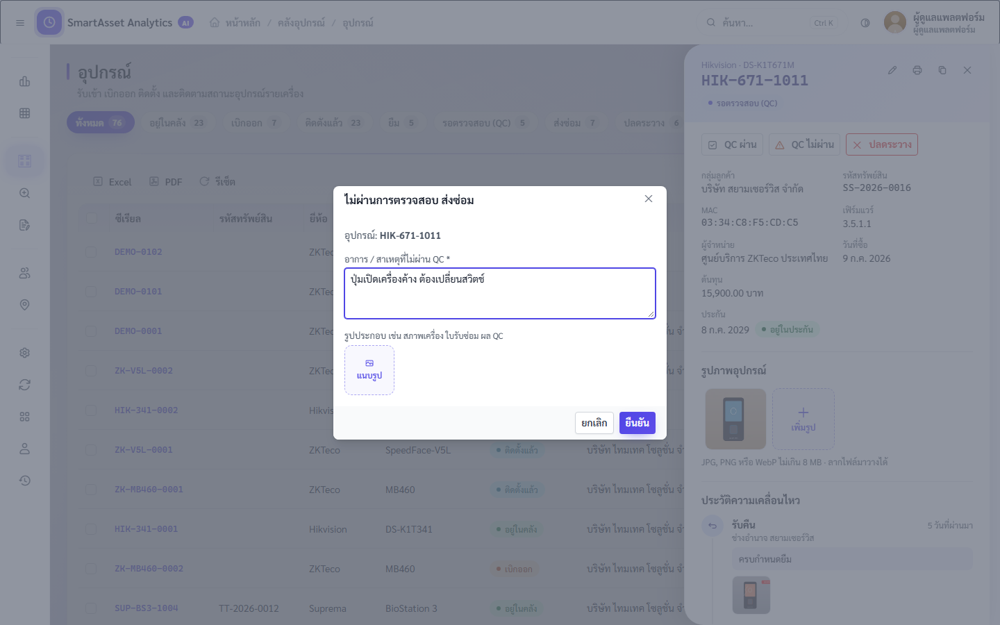
6.3 ปลดระวาง
ใช้กับเครื่องที่อยู่ในคลัง รอตรวจสอบ หรือส่งซ่อม เมื่อเลิกใช้งานถาวร ใส่เหตุผลแล้วกดปุ่มสีแดง ยืนยัน เครื่องจะไม่นับรวมในสต็อก แต่ประวัติยังอยู่

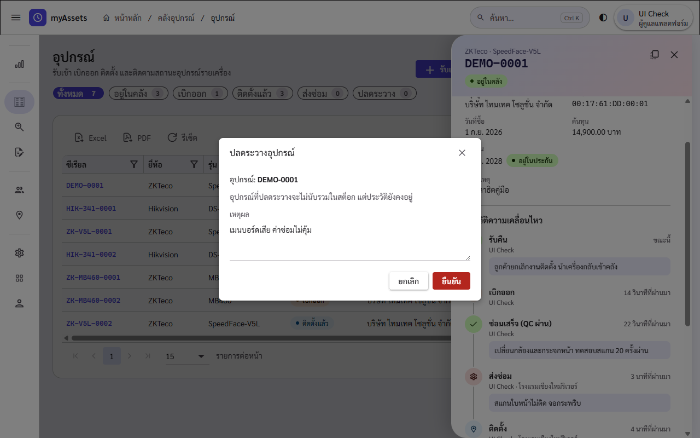
7. นำเข้าอุปกรณ์จากไฟล์ Excel/CSV
กด นำเข้า ที่หน้าอุปกรณ์หรือแดชบอร์ด
ขั้นที่ 1 — เลือกไฟล์: ดาวน์โหลด ไฟล์แม่แบบ .xlsx (มีคอลัมน์ ซีเรียล, รุ่น, MAC, วันที่ซื้อ, ต้นทุน, หมดประกัน, หมายเหตุ และแท็บรายชื่อรุ่น) กรอกข้อมูล แล้วลากไฟล์มาวางหรือกด เลือกไฟล์ (รองรับ .xlsx / .csv ไม่เกิน 2 MB และไม่เกิน 1,000 แถว)

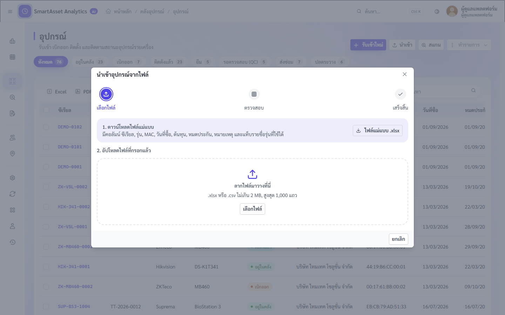
ขั้นที่ 2 — ตรวจสอบ: ระบบตรวจทุกแถวก่อนบันทึก แถวที่ผิดจะแสดงเหตุผล เช่น ซีเรียลซ้ำ ไม่พบรุ่น MAC ผิดรูปแบบ ติ๊ก แสดงเฉพาะแถวที่ผิด เพื่อดูเฉพาะแถวที่ต้องแก้ ระบบจะนำเข้าเมื่อทุกแถวถูกต้องเท่านั้น (ระหว่างนั้นปุ่มจะขึ้นว่า แก้ไขแถวที่ผิดก่อน และกดไม่ได้) ให้แก้ไฟล์แล้วกด เลือกไฟล์ใหม่

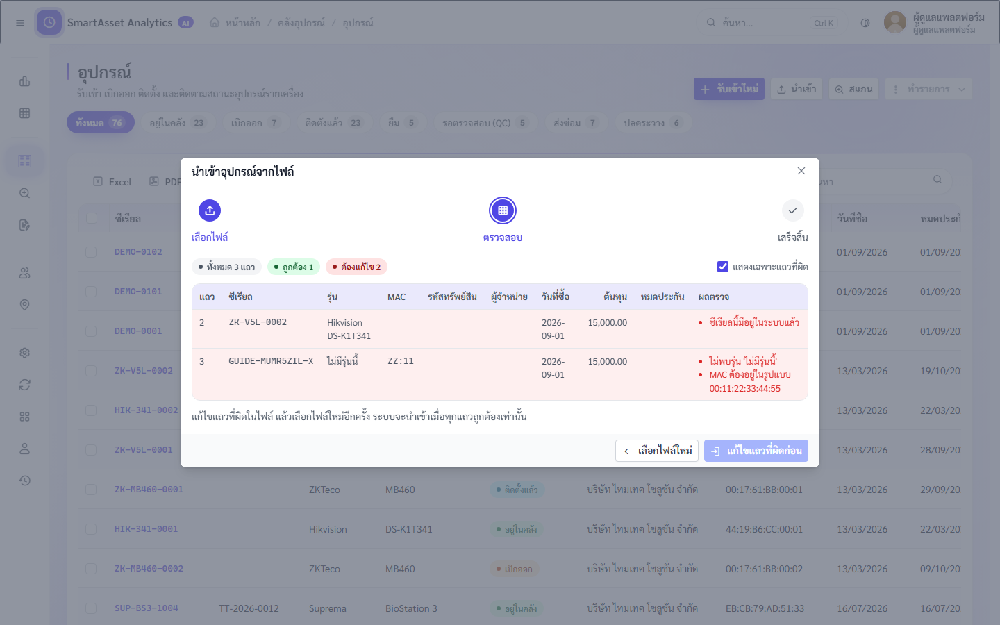
เมื่อทุกแถวผ่าน กด นำเข้า N เครื่อง

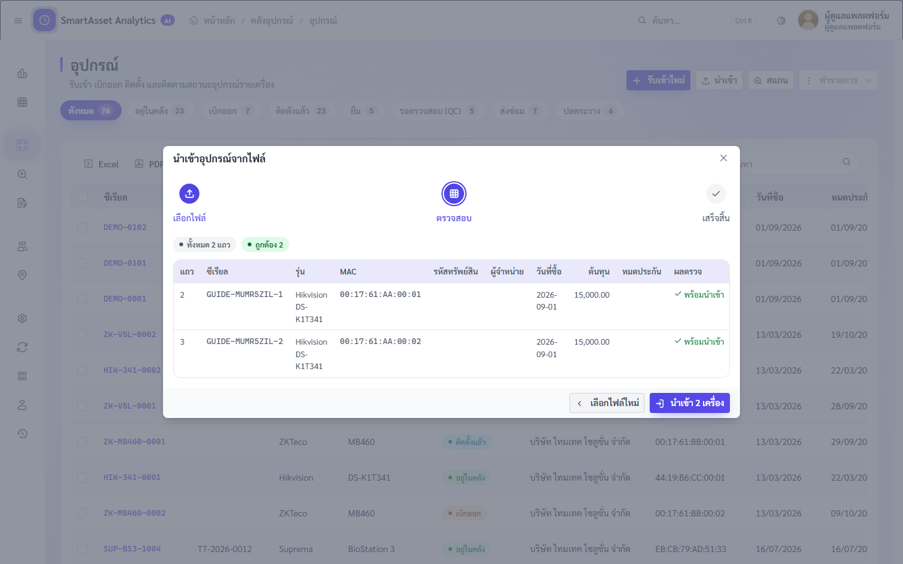
ขั้นที่ 3 — เสร็จสิ้น: ทุกเครื่องอยู่ในสถานะ "อยู่ในคลัง" และมีประวัติรับเข้า

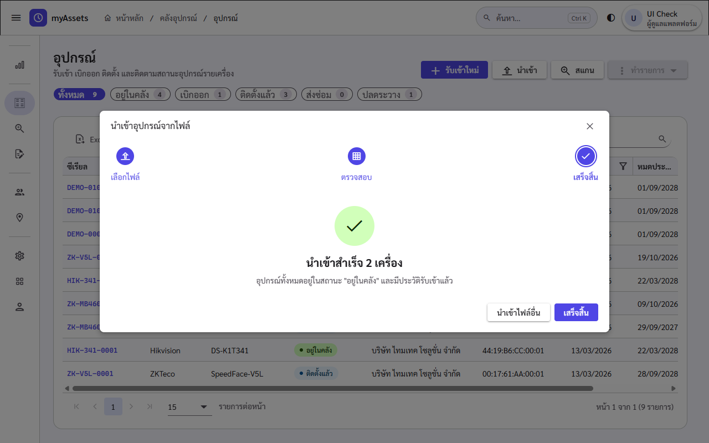
8. สถานีสแกน
เมนู คลังอุปกรณ์ → สถานีสแกน ออกแบบสำหรับเครื่องยิงบาร์โค้ด (ทำงานแบบคีย์บอร์ด ยิงแล้วกด Enter ให้อัตโนมัติ) หรือพิมพ์ซีเรียลเอง
- พบเครื่อง: แสดงสถานะ ตำแหน่ง และปุ่มทำรายการได้ทันที (รวมถึง รับคืน, QC ผ่าน / QC ไม่ผ่าน จึงใช้ตรวจรับเครื่องคืนทีละหลายเครื่องได้เร็ว) กด รายละเอียด เพื่อเปิดหน้าเครื่อง
- ด้านขวาเก็บประวัติการสแกนของรอบนี้ (กด ล้าง เพื่อเริ่มใหม่)

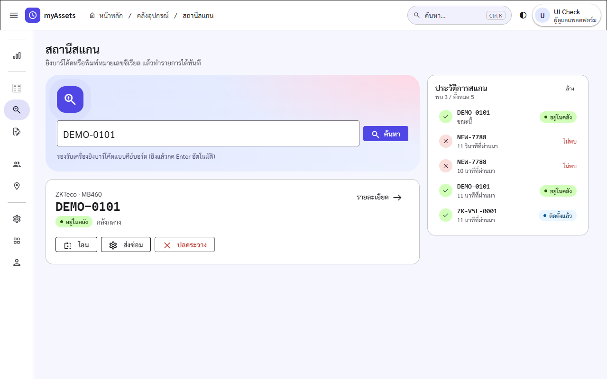
- ไม่พบเครื่อง: แจ้งชัดเจนและมีทางลัดให้รับเข้าเป็นเครื่องใหม่ด้วยซีเรียลนั้น

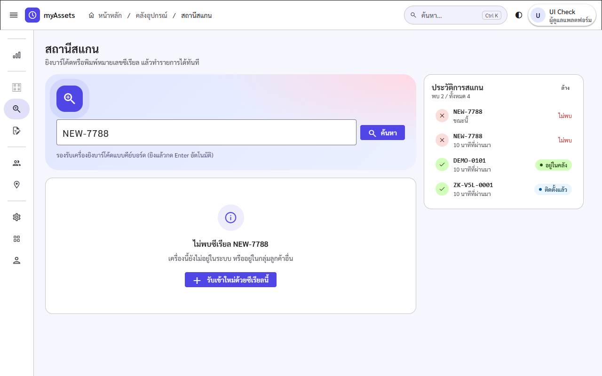
ช่องสแกนรับได้ทั้งซีเรียล (ตัวพิมพ์เล็กจะถูกแปลงเป็นตัวใหญ่ให้) และ QR บนฉลากของระบบ (หัวข้อ 4.6) ซึ่งเป็นลิงก์ ระบบจะดึงซีเรียลออกจากลิงก์ให้เอง
โหมดสแกนต่อเนื่อง: ติ๊ก โหมดสแกนต่อเนื่อง ใต้ช่องสแกน แล้วยิงไปเรื่อย ๆ เครื่องที่พบจะสะสมในกล่อง "รายการที่สแกนสะสม" (สแกนซ้ำไม่เพิ่มซ้ำ กด ✕ เพื่อเอาออกทีละเครื่อง หรือ ล้าง ทั้งหมด) ใต้รายการมีปุ่มทำรายการที่ทุกเครื่องในกล่องทำได้ พร้อมจำนวนเครื่อง เช่น รับคืน (12) หรือ QC ผ่าน (12) และปุ่ม พิมพ์ฉลาก กดแล้วใช้ไดอะล็อกและกติกาเดียวกับการทำรายการหลายเครื่องในหัวข้อ 4.5 เหมาะกับการตรวจรับเครื่องคืนหรือจัดส่งทั้งล็อต

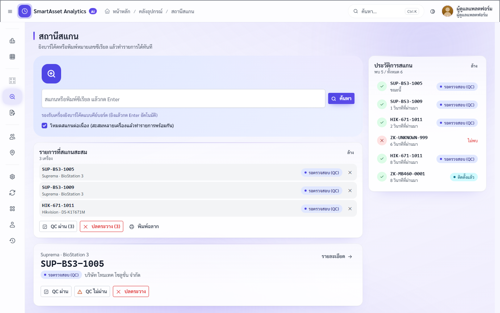
9. ความเคลื่อนไหวสต็อก
เมนู คลังอุปกรณ์ → ความเคลื่อนไหวสต็อก รวมทุกรายการที่เปลี่ยนสถานะ ย้าย หรือแก้ไขข้อมูลอุปกรณ์ พร้อมสถานะก่อนและหลัง กลุ่มลูกค้า ลูกค้า ผู้ซ่อม ผู้ทำรายการ และหมายเหตุ
- ช่วงวันที่: เลือกจากปฏิทินหรือทางลัด วันนี้ / 7 วันล่าสุด / 30 วันล่าสุด / เดือนนี้
- ประเภทรายการ: ใช้ชิป (รับเข้า โอนย้าย เบิกออก … แก้ไขข้อมูล) กรองเฉพาะประเภทที่ต้องการ
- กด ล้างตัวกรอง เพื่อกลับไปดูทั้งหมด ตัวกรองจะอยู่ในลิงก์ของหน้า จึงคัดลอก URL ส่งให้ผู้อื่นเปิดดูผลเดียวกันได้
- ค้นหาและส่งออก Excel/PDF ได้จากแถบเครื่องมือของตาราง

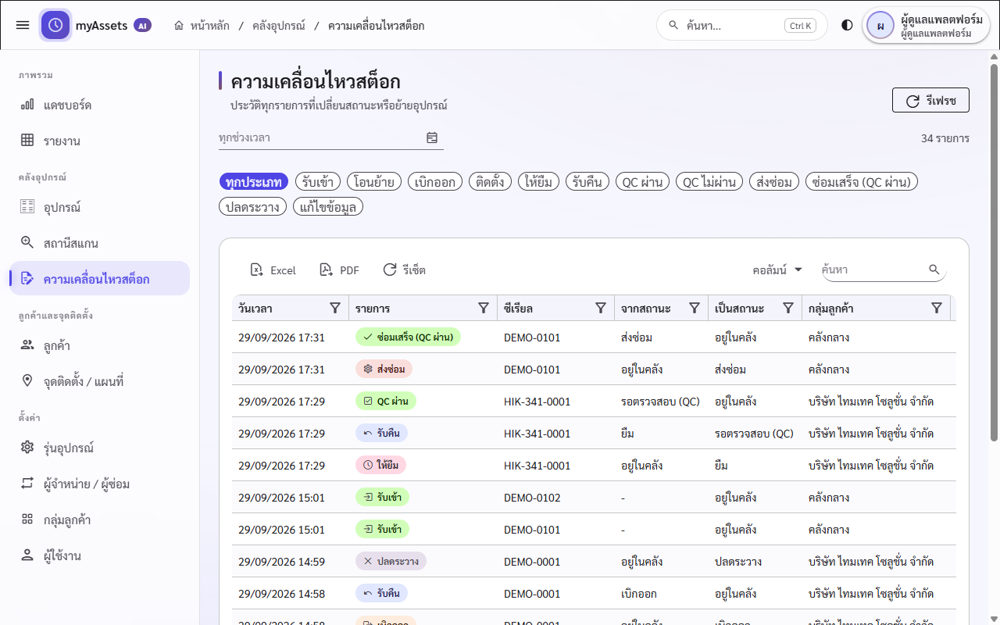
10. ลูกค้าและจุดติดตั้ง/แผนที่
10.1 ลูกค้า
เมนู ลูกค้าและจุดติดตั้ง → ลูกค้า จัดการบริษัทลูกค้าของแต่ละกลุ่ม พร้อมผู้ติดต่อและระดับบริการ ชิปด้านบนสลับดูลูกค้าที่ใช้งาน / ระงับ / ทั้งหมด
ลูกค้าจะไม่ถูกลบออกจากระบบเพื่อให้ประวัติการติดตั้งยังอ้างอิงได้ ให้เลือกแถวแล้วกด ระงับ แทน (ระงับไม่ได้ถ้ายังมีอุปกรณ์ติดตั้งอยู่ที่ลูกค้ารายนั้น) ลูกค้าที่ถูกระงับจะไม่แสดงในรายการตอนบันทึกการติดตั้ง และกด เปิดใช้ เพื่อกลับมาใช้งานได้

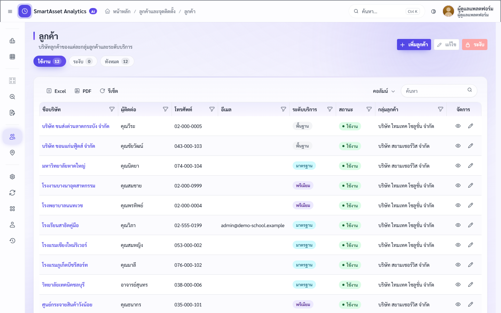
กด เพิ่มลูกค้า กรอกชื่อบริษัท กลุ่มลูกค้า ผู้ติดต่อ โทรศัพท์ อีเมล ระดับบริการ (พื้นฐาน / มาตรฐาน / พรีเมียม) และถ้ามี ที่อยู่ เลขประจำตัวผู้เสียภาษี (13 หลัก) และหมายเหตุ

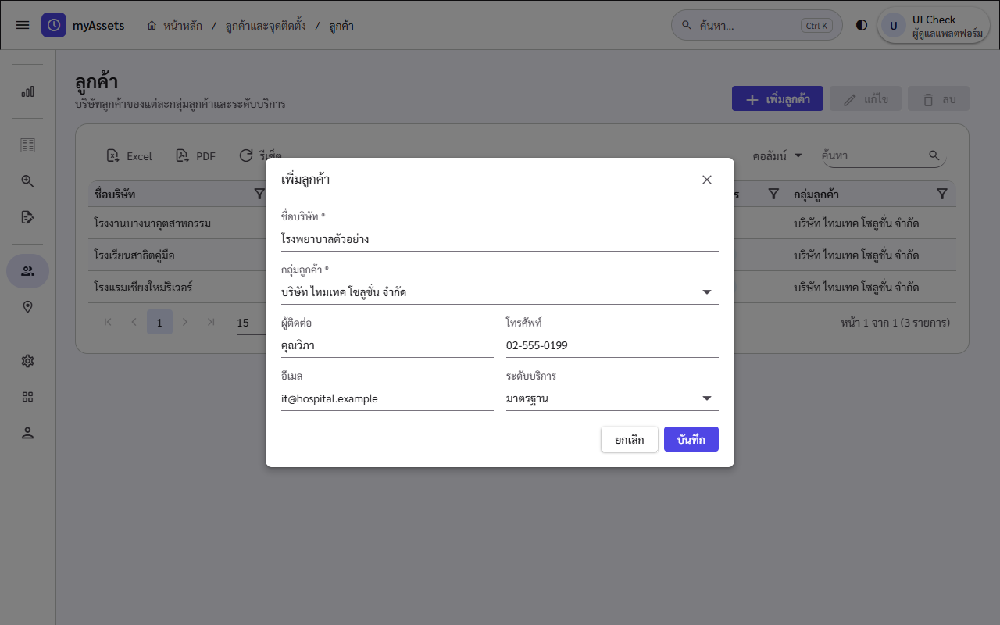
หน้ารายละเอียดลูกค้า: กด 👁 ในคอลัมน์จัดการ หรือคลิกชื่อลูกค้าในหน้าจุดติดตั้ง ความเคลื่อนไหวสต็อก และแผงรายละเอียดอุปกรณ์ เพื่อเปิดภาพรวมของลูกค้ารายนั้นในหน้าเดียว
- ข้อมูลติดต่อ ที่อยู่ และเลขผู้เสียภาษี
- การ์ดสรุป: จุดติดตั้งที่ใช้งาน, ติดตั้งทั้งหมด (รวมที่ถอนแล้ว), อยู่ในประกัน และอยู่ระหว่างซ่อม พร้อมชิปสถานะปัจจุบันของทุกเครื่องที่เคยติดตั้งให้ลูกค้ารายนี้
- แผนที่จุดติดตั้งที่ซูมพอดีทุกจุด และประวัติความเคลื่อนไหวของลูกค้า (ติดตั้ง รับคืน ส่งซ่อม พร้อมรูปประกอบ)
- ตารางจุดติดตั้งทั้งหมด (คลิกเพื่อเปิดอุปกรณ์) รูปหน้างานแยกตามจุด และประวัติการแก้ไขข้อมูลลูกค้า

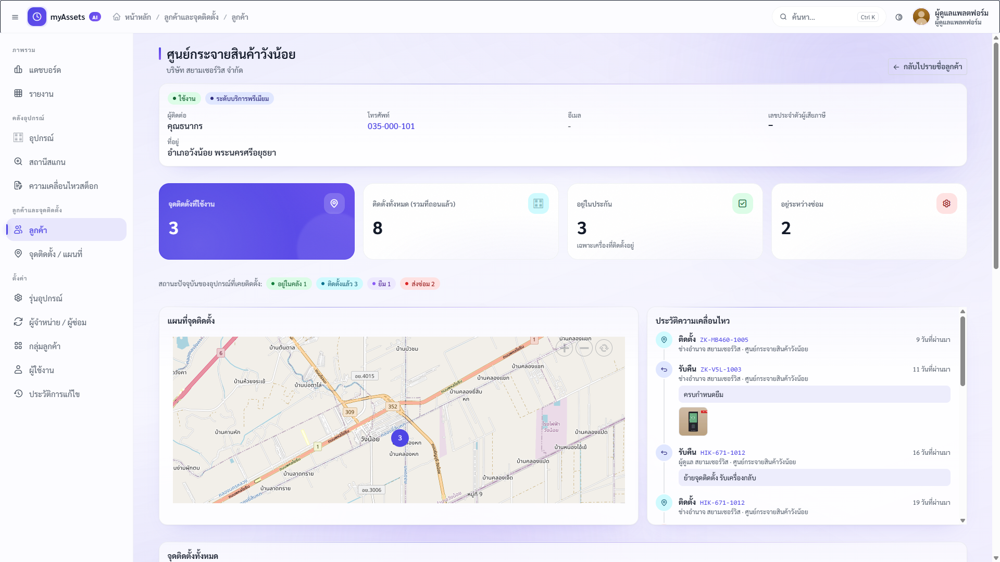
10.2 จุดติดตั้ง / แผนที่
แสดงทุกจุดติดตั้งบนแผนที่และในตาราง

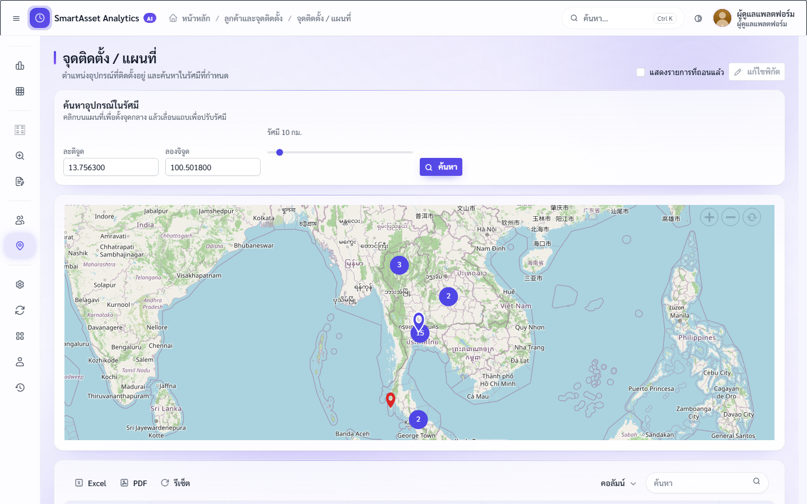
ค้นหาอุปกรณ์ในรัศมี: คลิกบนแผนที่เพื่อตั้งจุดกลาง (หรือพิมพ์ละติจูด/ลองจิจูด) เลื่อนแถบ รัศมี (1–100 กม.) แล้วกด ค้นหา แผนที่จะวาดวงกลมรัศมีและซูมให้พอดี ตารางด้านล่างแสดงเครื่องที่อยู่ในรัศมีพร้อมระยะทาง เมื่อค้นหาแล้ว การคลิกจุดใหม่หรือปรับรัศมีจะค้นหาใหม่ให้อัตโนมัติ กด แสดงทั้งหมด เพื่อกลับไปดูทุกจุด เหมาะสำหรับวางแผนงานช่างหน้างาน

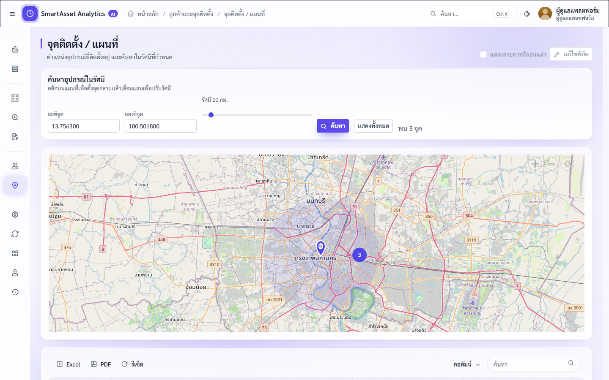
เลือกแถวแล้วกด แก้ไขพิกัด เพื่อย้ายหมุดของจุดติดตั้งด้วยการคลิกบนแผนที่ในไดอะล็อกได้เช่นกัน ปุ่ม 👁 ในคอลัมน์จัดการเปิดรายละเอียดจุดติดตั้งพร้อมแผนที่และ รูปหน้างาน ซึ่งเพิ่มหรือลบรูปได้จากตรงนั้น
11. ตั้งค่า: รุ่นอุปกรณ์ ผู้จำหน่าย/ผู้ซ่อม กลุ่มลูกค้า ผู้ใช้งาน
11.1 รุ่นอุปกรณ์
รายการยี่ห้อ/รุ่น/ประเภท ที่ใช้ตอนรับเข้าและในไฟล์นำเข้า คอลัมน์แรกแสดงรูปสินค้าของรุ่น ผู้ดูแลแพลตฟอร์มตั้งรูปได้จากปุ่ม 👁 → รูปสินค้า (รุ่นละ 1 รูป อัปโหลดใหม่จะแทนรูปเดิม)

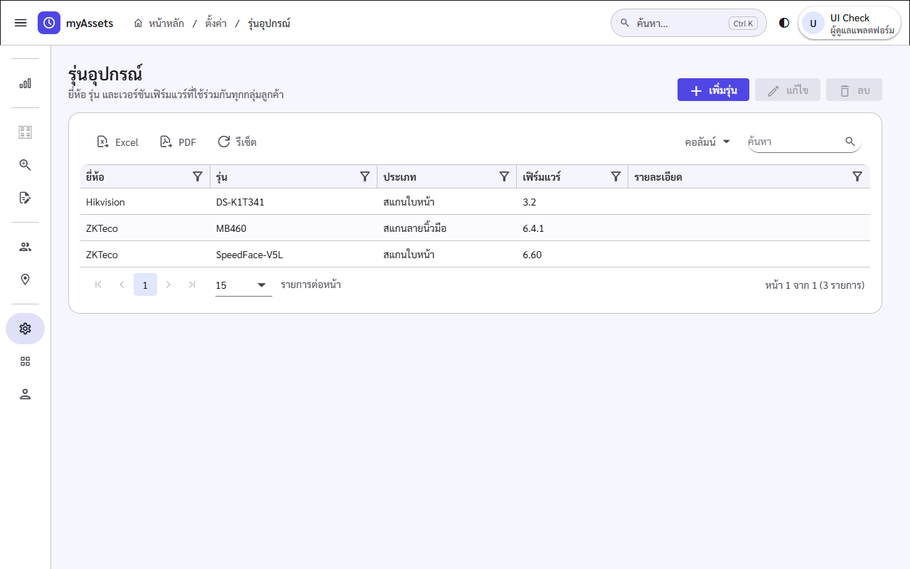
11.2 ผู้จำหน่าย / ผู้ซ่อม
รายชื่อร้านซ่อมและผู้จำหน่ายที่ใช้ร่วมกันทุกกลุ่มลูกค้า ใช้เลือกตอนส่งซ่อม และแสดงในคอลัมน์ "ผู้ซ่อม" ของความเคลื่อนไหวสต็อก กด เพิ่มผู้จำหน่าย แล้วกรอกชื่อ (จำเป็น) ผู้ติดต่อ โทรศัพท์ อีเมล และหมายเหตุ ผู้ดูแลแพลตฟอร์มเท่านั้นที่เพิ่ม แก้ไข หรือลบได้ (ลบไม่ได้ถ้าเคยถูกใช้ในรายการส่งซ่อมแล้ว)

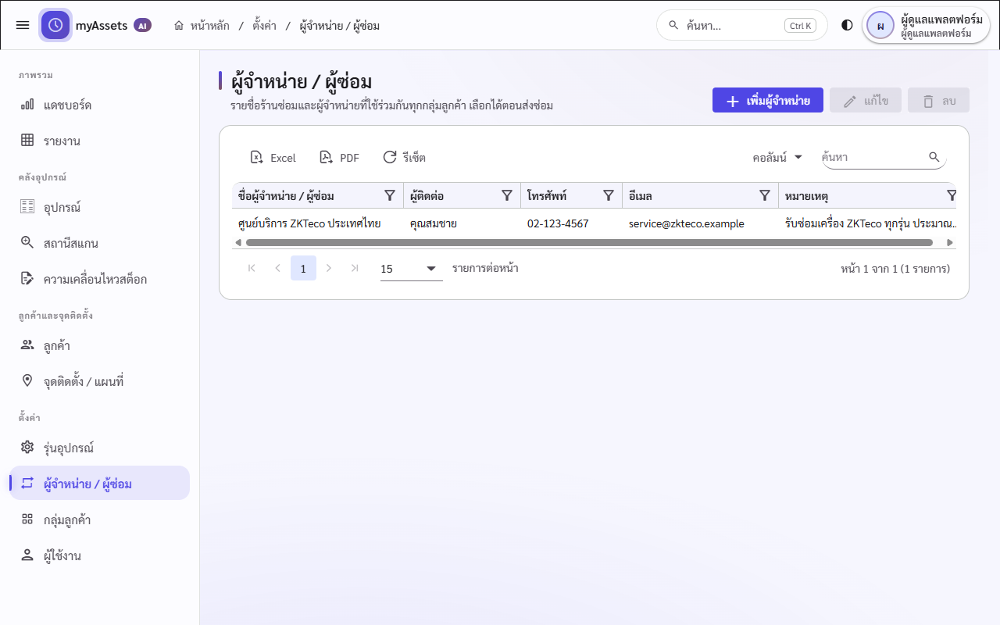
11.3 กลุ่มลูกค้า (เฉพาะผู้ดูแลแพลตฟอร์ม)
องค์กรที่ใช้ระบบ แต่ละกลุ่มเห็นเฉพาะอุปกรณ์และข้อมูลของตนเอง

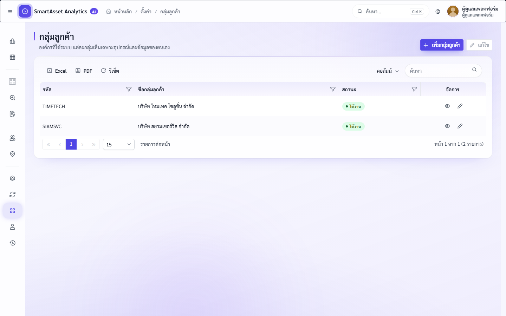
11.4 ผู้ใช้งาน
จัดการบัญชี บทบาท และการระงับใช้งาน คอลัมน์ชื่อแสดงรูปโปรไฟล์ของผู้ใช้ (ถ้าไม่มีรูปจะแสดงอักษรแรกของชื่อ)

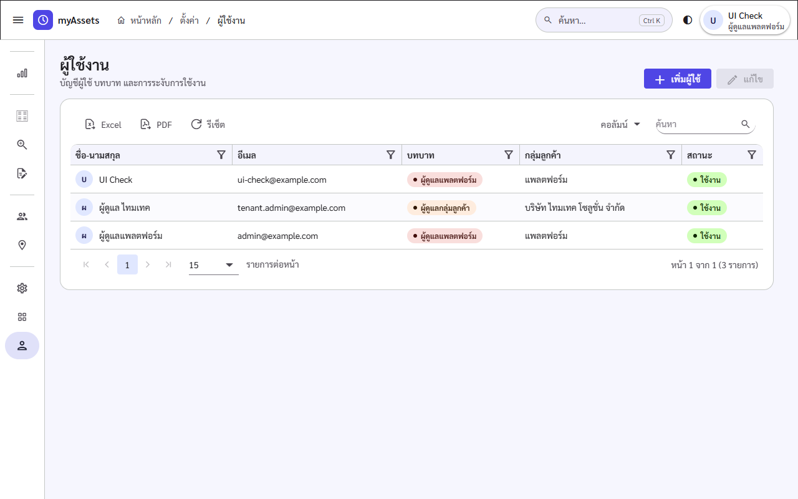
กด เพิ่มผู้ใช้ กรอกชื่อ อีเมล บทบาท รหัสผ่าน (อย่างน้อย 8 ตัว) และกลุ่มลูกค้า ปุ่ม บันทึก จะกดได้เมื่อกรอกช่องจำเป็นครบ

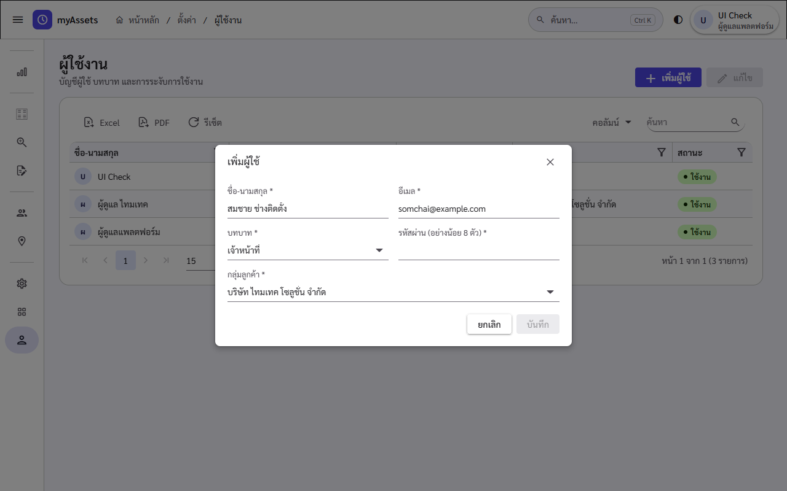
11.5 ประวัติการแก้ไขข้อมูล (ผู้ดูแล)
เมนู ตั้งค่า → ประวัติการแก้ไข รวมทุกการสร้าง แก้ไข ระงับ และลบ ข้อมูลตั้งค่าและข้อมูลหลัก ได้แก่ กลุ่มลูกค้า ผู้ใช้งาน รุ่นอุปกรณ์ ผู้จำหน่าย ลูกค้า จุดติดตั้ง และรูปภาพ พร้อมเวลา ผู้ทำรายการ และจำนวนฟิลด์ที่เปลี่ยน (การเปลี่ยนแปลงของตัวอุปกรณ์อยู่ในความเคลื่อนไหวสต็อกแล้ว)
- กรองด้วยช่วงวันที่และชิปประเภทข้อมูล ตัวกรองอยู่ในลิงก์ของหน้าเหมือนหน้าความเคลื่อนไหวสต็อก
- กด 👁 เพื่อดูค่าก่อนและหลังของแต่ละฟิลด์
- ผู้ดูแลแพลตฟอร์มเห็นทุกรายการ ผู้ดูแลกลุ่มลูกค้าเห็นเฉพาะของกลุ่มตน บันทึกนี้แก้ไขหรือลบไม่ได้

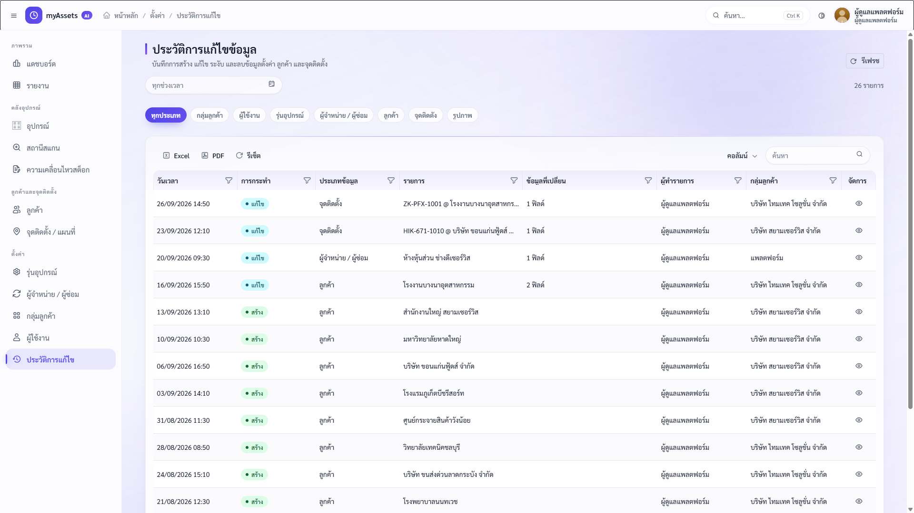
หน้าต่างดูรายละเอียด (ปุ่ม 👁) ของรายการในหน้าตั้งค่า จุดติดตั้ง และหน้ารายละเอียดลูกค้า มีส่วน "ประวัติการแก้ไข" ของรายการนั้นด้วย
12. รายงาน
เมนู ภาพรวม → รายงาน มี 2 แท็บ ทุกตารางส่งออก Excel/PDF ได้จากแถบเครื่องมือ
ยอดคงเหลือ — จำนวนเครื่องและต้นทุนรวม แยกตามรุ่น × กลุ่มลูกค้า × สถานะ จัดกลุ่มตามรุ่นพร้อมยอดรวมท้ายกลุ่มและท้ายตาราง ลากหัวคอลัมน์ไปวางที่แถบจัดกลุ่มเพื่อเปลี่ยนการจัดกลุ่ม (เช่น ตามกลุ่มลูกค้า) หรือกด ✕ ที่ชิปเพื่อยกเลิก ติ๊ก รวมอุปกรณ์ที่ปลดระวาง ถ้าต้องการนับเครื่องที่เลิกใช้แล้วด้วย

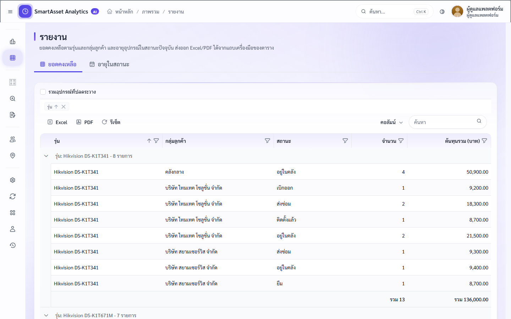
อายุในสถานะ — แต่ละเครื่องอยู่ในสถานะปัจจุบันมาตั้งแต่เมื่อไรและกี่วัน จัดกลุ่มตามสถานะ พร้อมจำนวนเครื่องและค่าสูงสุดของแต่ละกลุ่ม ใช้ชิปด้านบนกรองเฉพาะสถานะ เช่น ดูเครื่องที่ส่งซ่อมนานที่สุด หรือเครื่องที่ค้างอยู่ในคลังนานเกินไป

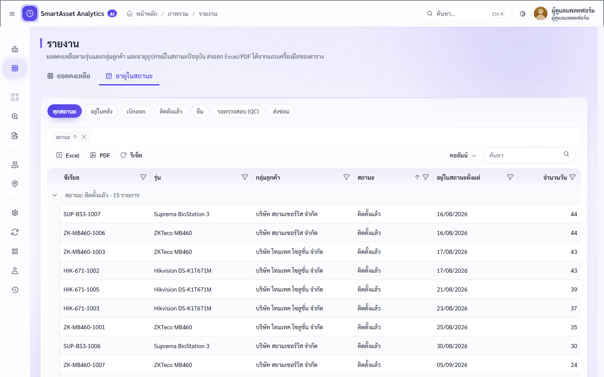
13. โปรไฟล์ ธีม และการใช้งานบนมือถือ
คลิกชื่อผู้ใช้มุมขวาบนเพื่อเปิดเมนู: โปรไฟล์และรหัสผ่าน, เลือกธีม (สว่าง / มืด / ตามระบบ) และออกจากระบบ ปุ่ม ◐ ข้างช่องค้นหาสลับธีมได้เร็ว

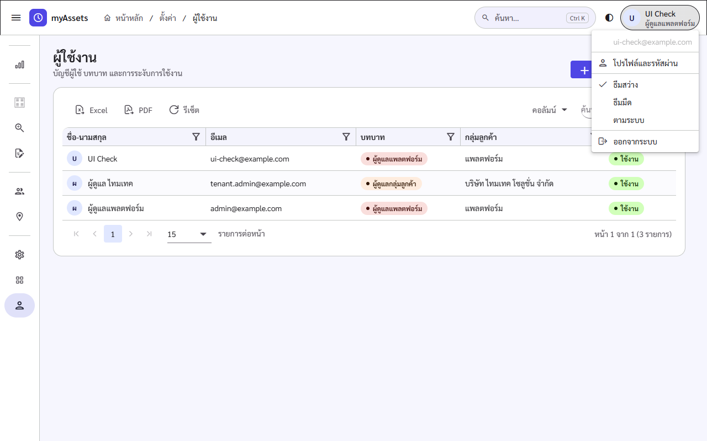
หน้าโปรไฟล์แสดงข้อมูลบัญชี เปลี่ยนธีม และเปลี่ยนรหัสผ่าน กดปุ่มรูปภาพที่มุมรูปโปรไฟล์เพื่ออัปโหลดรูปของตัวเอง (JPG, PNG, WebP ไม่เกิน 8 MB) รูปจะแสดงที่มุมขวาบนและในรายชื่อผู้ใช้ทันที และกด ลบรูปโปรไฟล์ เพื่อกลับไปใช้อักษรแรกของชื่อ

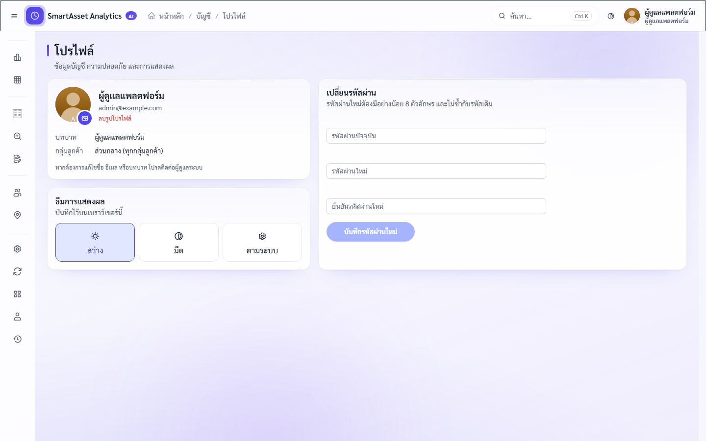
ธีมมืด

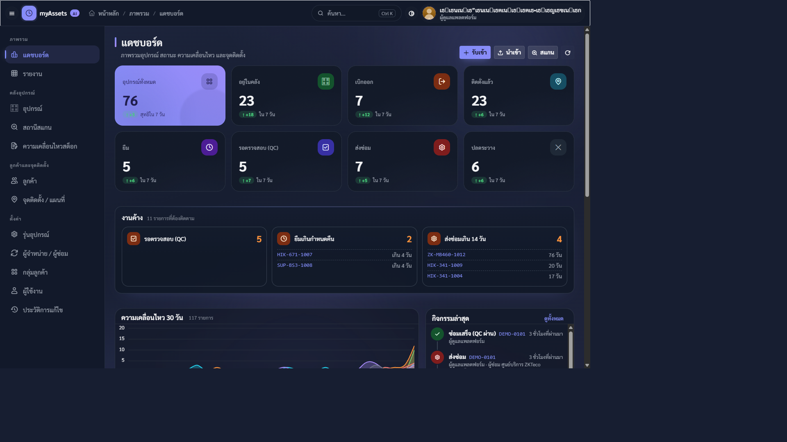
บนมือถือ การ์ดจะเรียงเป็น 2 คอลัมน์ เมนูเปิดจาก ☰ แบบลิ้นชักและปิดเองเมื่อเลือกหน้า ตารางซ่อนคอลัมน์รอง (เช่น ยี่ห้อ MAC วันที่) บนจอแคบเพื่อให้เห็นซีเรียลและสถานะ และเลื่อนซ้าย-ขวาได้
| แดชบอร์ด | เมนู | รายการอุปกรณ์ |
|---|---|---|
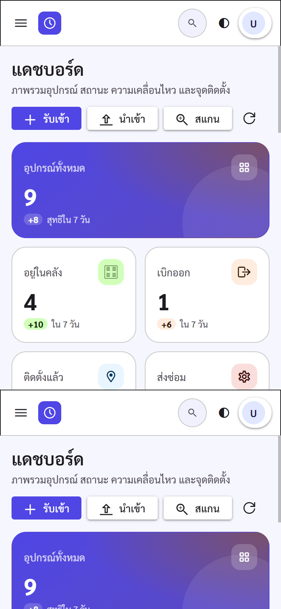 | 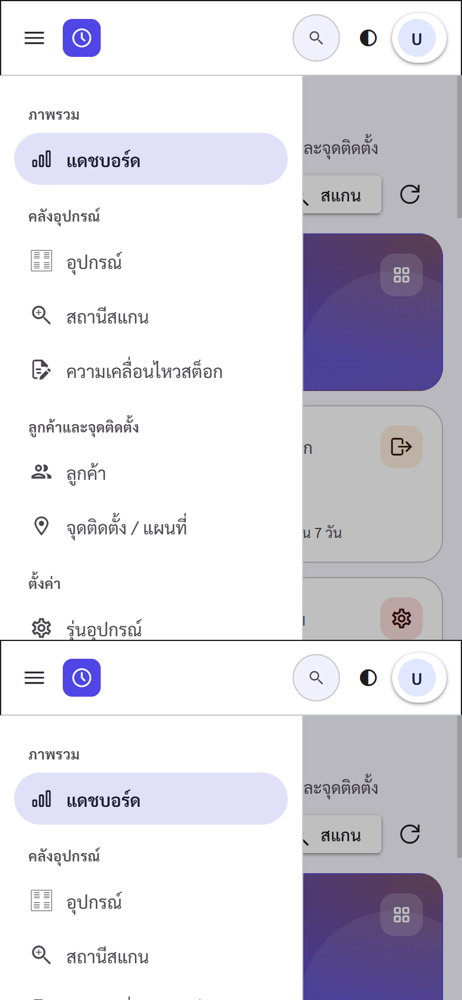 |


14. ข้อมูลตัวอย่างสำหรับทดลองใช้
ผู้ดูแลระบบโหลดข้อมูลสาธิตได้ด้วยคำสั่ง docker compose exec api python -m app.infrastructure.demo_data (รายละเอียดใน README ของโปรเจกต์) เหมาะกับการอบรมหรือทดลองใช้ก่อนใส่ข้อมูลจริง ชุดข้อมูลประกอบด้วย
- กลุ่มลูกค้า 2 กลุ่ม ลูกค้าประมาณ 11 ราย จุดติดตั้งกระจายทั่วประเทศ และผู้ใช้ทุกบทบาท
- รุ่นอุปกรณ์ 6 รุ่นพร้อมรูปสินค้า ผู้จำหน่าย/ผู้ซ่อม 4 ราย และอุปกรณ์ราว 70 เครื่องครบทุกสถานะ
- ประวัติย้อนหลัง 90 วันในเวลาทำการ ทั้งติดตั้ง รับคืน ส่งซ่อม ให้ยืม และ QC พร้อมรูปหน้างานและรูปประกอบรายการ รวมถึงเครื่องที่ยืมเกินกำหนด ส่งซ่อมนาน และประกันใกล้หมด เพื่อให้แผงงานค้างและรายงานมีข้อมูลให้ดู
รันซ้ำได้โดยไม่สร้างข้อมูลซ้ำ ข้อมูลตัวอย่างใช้ชื่อและเบอร์โทรสมมติทั้งหมด ผู้ใช้ตัวอย่างใช้รหัสผ่านเดียวกับบัญชีผู้ดูแลเริ่มต้น จึงห้ามโหลดบนระบบจริง
15. ผลตรวจ UX/UI ระหว่างทำคู่มือ
แก้ไขแล้ว
| ปัญหา | การแก้ไข |
|---|---|
| ช่องหมายเหตุ (textarea) ในทุกฟอร์มกว้างแค่ราว 20 ตัวอักษร | ขยายให้เต็มคอลัมน์ฟอร์ม (styles.scss) |
| เมนูย่อแล้วแต่เนื้อหาเลื่อนไปอยู่ใต้เมนู หลังออกจากหน้าอุปกรณ์ | ย้ายระยะขอบเนื้อหามาคุมด้วย CSS ของ shell เอง (shell.scss) |
| เมนูเปิดค้างกว้าง 256px ทั้งที่สถานะเป็น "ย่อ" เมื่อหน้าต่างเปลี่ยนขนาด | เปลี่ยน Sidebar จากแบบ Auto เป็น Push/Over (shell.html) ลิ้นชักบนมือถือจึงไม่เด้งเปิดเองด้วย |
| ข้อความอังกฤษหลงเหลือ "Columns", "(1 item)" | เพิ่มคำแปลใน locale.ts |
| หัวข้อเชิงเทคนิค "(PostGIS ST_DWithin)" ในหน้าจุดติดตั้ง | เปลี่ยนเป็น "ค้นหาอุปกรณ์ในรัศมี" |
| คำอธิบายหน้ากลุ่มลูกค้าไม่ชัด | เขียนใหม่ให้บอกว่าแต่ละกลุ่มเห็นเฉพาะข้อมูลของตน |
| โอนอุปกรณ์: รายการปลายทางมี "คลังกลาง" แม้เครื่องอยู่คลังกลางอยู่แล้ว | ไม่แสดงตำแหน่งปัจจุบันของเครื่องในรายการปลายทาง |
| นำเข้า: checkbox "แสดงเฉพาะแถวที่ผิด" เป็นสีม่วงของ Syncfusion ไม่ตรงสีแบรนด์ | ใช้สี primary ของธีม (accent-color) |
| นำเข้า: ปุ่มที่ถูกปิดยังเขียน "นำเข้า 2 เครื่อง" | เปลี่ยนเป็น "แก้ไขแถวที่ผิดก่อน" พร้อม tooltip บอกเหตุผล |
| ความเคลื่อนไหวสต็อก: คอลัมน์ "รายการ" เป็นข้อความธรรมดาและถูกตัดคำ | แสดงเป็นชิปสีพร้อมไอคอนแบบเดียวกับไทม์ไลน์ และขยายความกว้างคอลัมน์ |
| แดชบอร์ดเมื่อกางเมนูเต็ม: การ์ด "อุปกรณ์ทั้งหมด" ถูกตัดคำ และ legend กราฟโดนัทแบ่งหน้า | จำนวนคอลัมน์ของการ์ดปรับตามพื้นที่เนื้อหาจริง (container query) และย้าย legend ไปด้านล่างโดยไม่แบ่งหน้า |
| แผงรายละเอียดอุปกรณ์: ปุ่ม "แก้ไข" ตกไปบรรทัดใหม่เมื่อมีหลายปุ่ม | ย้ายเป็นปุ่มไอคอน ✎ ที่หัวแผง ข้างปุ่มคัดลอกลิงก์ |
| มือถือ: ตารางอุปกรณ์เห็นแค่ ซีเรียล/ยี่ห้อ/รุ่น ต้องเลื่อนขวาเพื่อดูสถานะ | ซ่อนคอลัมน์รองบนจอแคบกว่า 768px (hideAtMedia ใน app-data-grid) |
| แดชบอร์ด: การ์ดสถานะและกิจกรรมล่าสุดคลิกไม่ได้ | คลิกการ์ดไปหน้าอุปกรณ์ที่กรองสถานะนั้น และคลิกซีเรียลเปิดรายละเอียดเครื่อง |
ภาพ 14-repair-done-required และ 15-repair-done ถ่ายก่อนแก้ความกว้าง textarea | ถ่ายใหม่พร้อมภาพหน้าจออื่นที่เปลี่ยน |
| พิมพ์ฉลาก: ตัวอย่างและหน้าพิมพ์มีแต่ข้อความ ไม่มี QR และบาร์โค้ด | ตัวสร้าง QR/บาร์โค้ดวัดขนาดจากกล่องที่ถูกซ่อนไว้จึงได้ขนาด 0 ให้แสดงตัวอย่างหลังเปิดไดอะล็อก วางส่วนพิมพ์ไว้นอกจอแทนการซ่อน และแก้ค่าระดับแก้ข้อผิดพลาดของ QR |
| หน้ารายละเอียดลูกค้า: แผนที่ซูมออกทั้งประเทศแม้จุดติดตั้งอยู่ใกล้กัน | ซูมให้พอดีกับทุกจุดติดตั้งของลูกค้า |
| ข้อมูลตัวอย่าง: ประวัติการแก้ไขมีเวลาตีสอง-ตีสาม | จัดเวลาให้อยู่ในเวลาทำการเหมือนความเคลื่อนไหวสต็อก |
| ผู้ที่ตั้งค่าเครื่องให้ "ลดการเคลื่อนไหว" เห็นหน้าเข้าสู่ระบบและไอคอนกะพริบรัว | อนิเมชันที่วนไม่รู้จบเล่นครั้งเดียวแล้วหยุดเมื่อลดการเคลื่อนไหว (styles.scss) |
ข้อเสนอแนะ (ยังไม่แก้)
| ปัญหา | ข้อเสนอ |
|---|---|
| หน้าอุปกรณ์: ปุ่ม ทำรายการ บนหัวหน้าใช้งานไม่ได้จริง เพราะเลือกแถวแล้วแผงรายละเอียดจะเปิดทับพร้อมพื้นหลังบัง และเมื่อปิดแผงก็ไม่มีแถวที่เลือก | เอาปุ่มนี้ออก (ปุ่มทำรายการมีครบในแผงรายละเอียด) หรือให้ทำงานกับแถวที่ติ๊กไว้ |
อุปกรณ์ทดสอบ (DEMO-0001, DEMO-0101, DEMO-0102, GUIDE-…) ค้างอยู่บนสุดของรายการใน DB สำหรับพัฒนา | ล้าง DB แล้วโหลดข้อมูลตัวอย่างใหม่ก่อนถ่ายภาพชุดถัดไป |